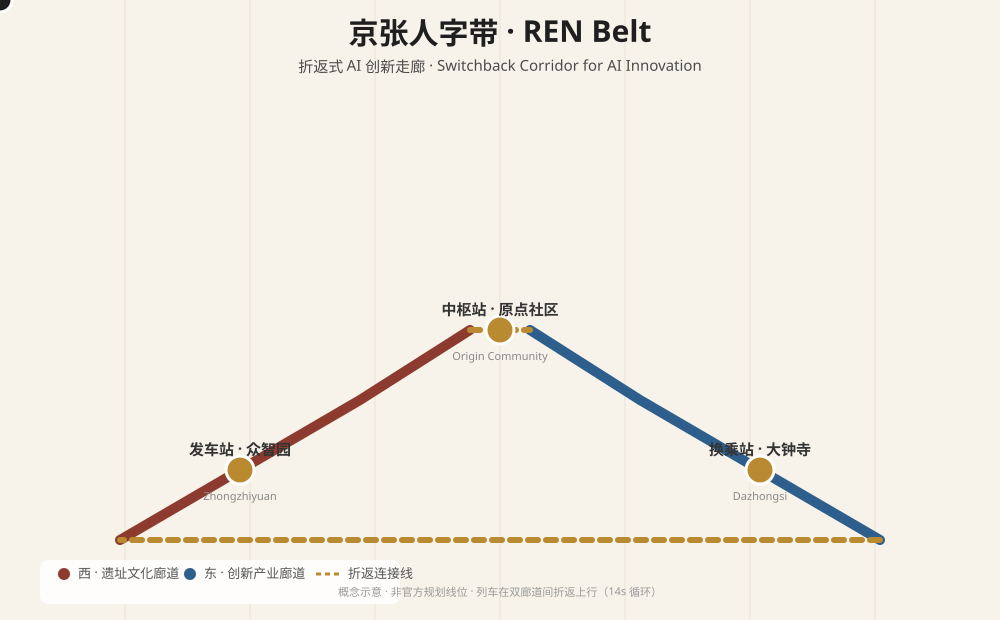
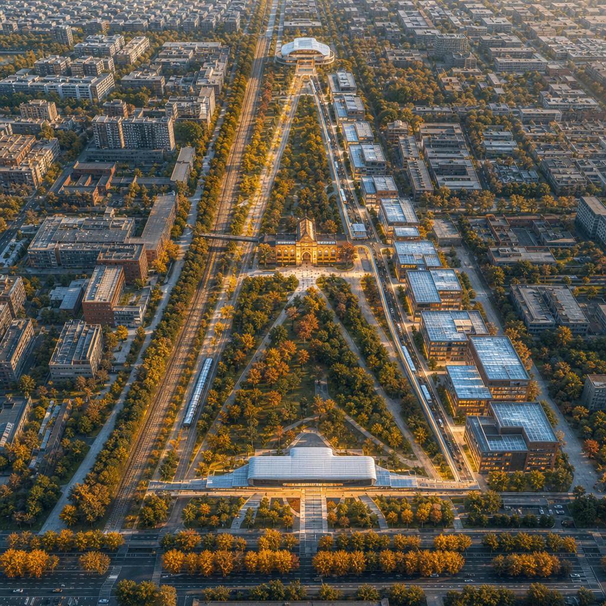
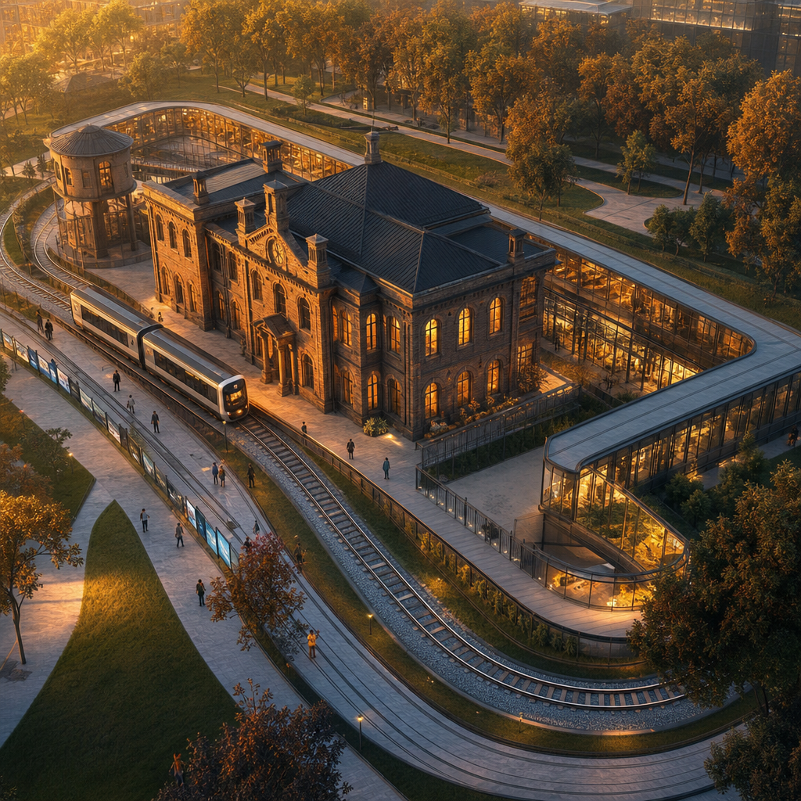
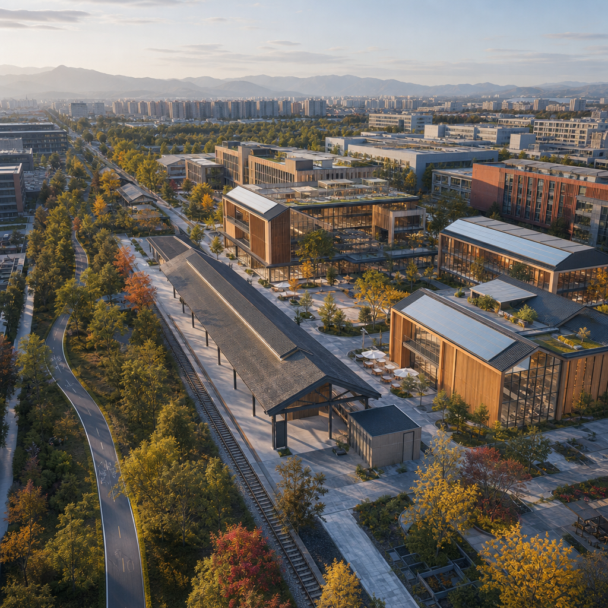
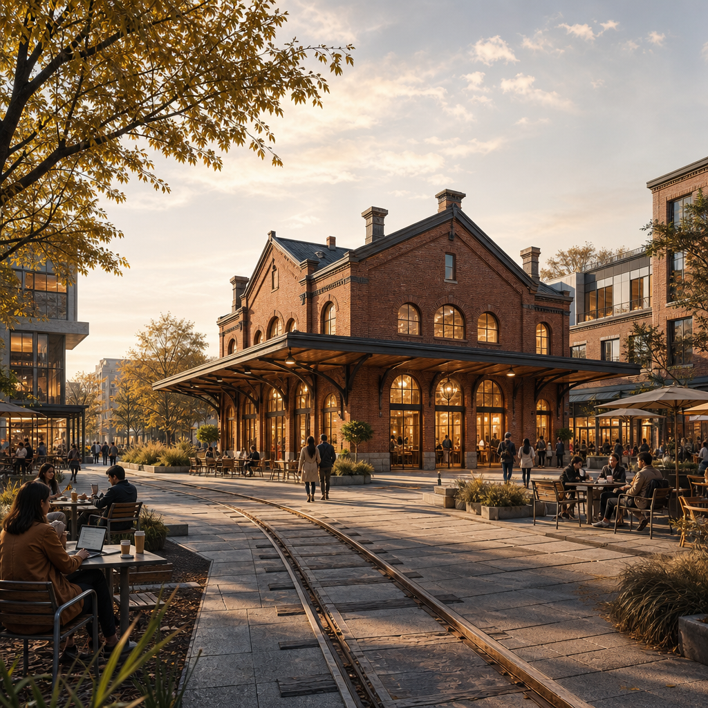
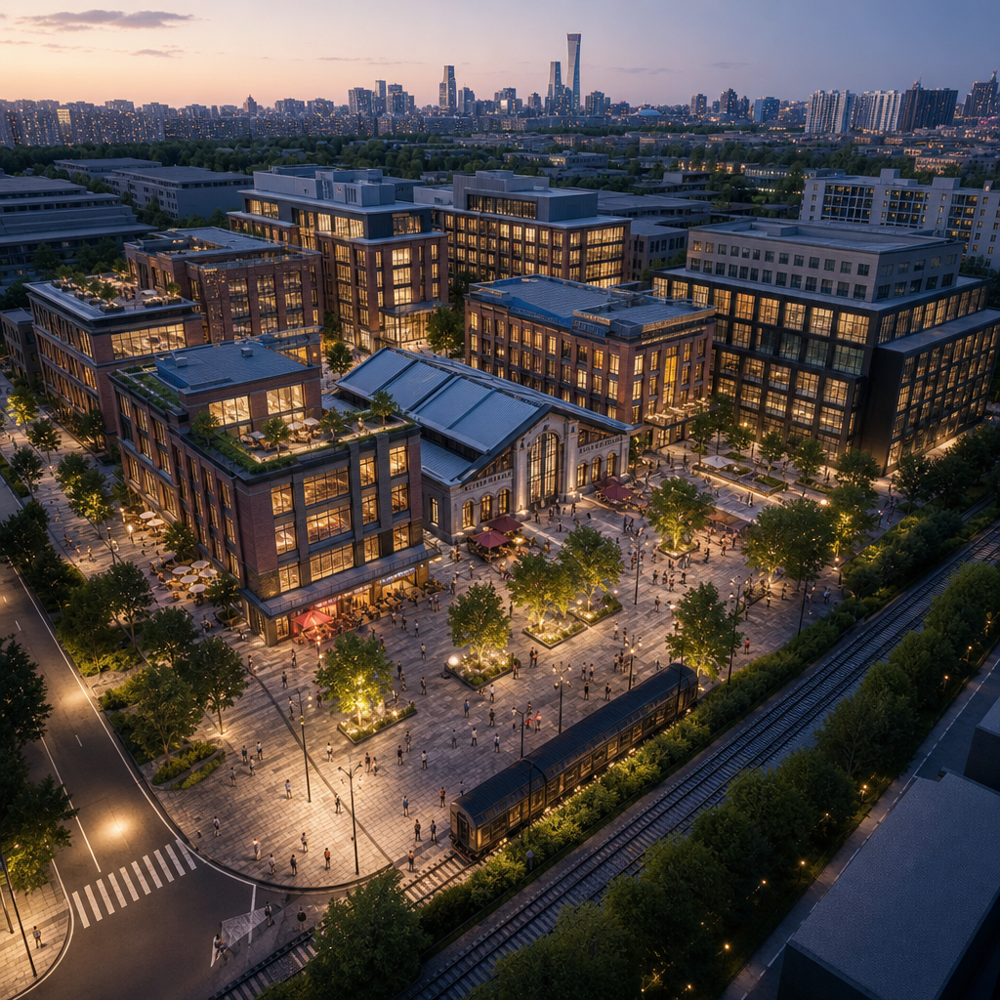
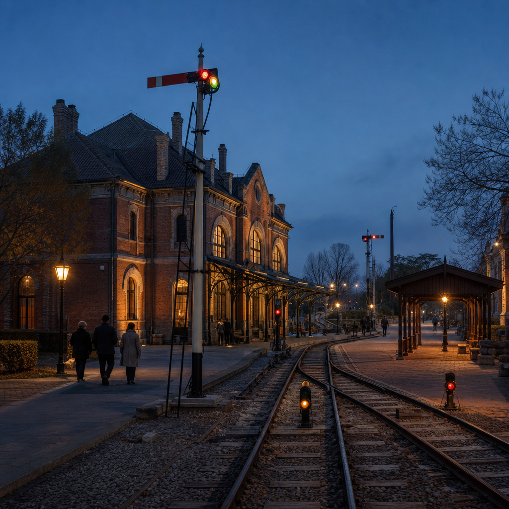

Coordinated Research · 43.6 km²
- REN belt system: twin corridors, three stations
- 3-zone 2-wing synergy loop
- 6 global innovation ecosystem cases
In 1909, Jeme Tien Yow conquered the 33‰ grade with the famous switchback ("ren-shaped") railway alignment — trading space for slope instead of ramming the mountain. A century later, this rail corridor climbs the "innovation grade" with the same wisdom: a west heritage corridor and an east innovation corridor form the REN twin tracks, and three key areas act as switchback stations — Departure Yard (Zhongzhiyuan) → Central Station (AI Origin Community) → Interchange (Dazhongsi) — where innovation factors switch back and climb step by step. Authoritative data: GeoJSON, metrics.json, matrices and self-check results.
The switchback spirit: do not ram the grade — trade space for slope. Innovation factors shuttle between Zhongzhiyuan, Origin Community and Dazhongsi, rising level by level along switchback connectors, just as a train climbs a switchback alignment.
Coordinated research scope → overall design scope → key area detailed design, binding industrial judgment, urban renewal and district design to layers and metrics.
Each card covers service object, spatial location, operational data, privacy boundary, human review and operator.
Autonomous low-speed shuttle loop linking the three stations along the heritage greenway and switchback connectors.
AR revival of century-old railway history at Qinghuayuan platform, overlaying AI belt concepts.
Inspection robots patrolling park trails and facilities, accumulating city-scale robotics operational data.
Railway-style interlocking sandbox for city agents: rule check, permission interlock, human release.
Dedicated robot delivery lanes along the twin corridors for food, parcels and pharmacy on demand.
Platform-type AI-assisted health screening kiosk; encrypted medical data, licensed clinician review.
24h developer space with periodic "switchback marathon" coding competitions.
Open-source showcase and honor wall with real-time contribution signals — leaving contributors' names.
Drone delivery test routes around Dazhongsi verifying safe and efficient dense-urban operations.
Low-speed autonomous shuttle and valet parking test field open for public rides.
AI dispatch and rest hub for riders and ride-hailing drivers; algorithmic fairness review.
Compliance consultation for founders: data compliance, IP, generative-AI service norms.
Three public memorial/learning nodes turn "leaving your name" into spatial fact; the "Jing-Zhang Signal Festival" turns them into an annual operating loop. Public learning value emphasized — no "pilgrimage" marketing narrative.
Switchback-shaped monument engraving the names of the first Agents and contributors — "a century later, your name will be carved here."
Open-source showcase gallery + contributor honor wall, signal lamps lighting up OSS contributions in real time.
Developer promenade paved with recycled rails, lined with AI scenario display nodes.
Annual "Jing-Zhang Signal Festival": departure ceremony (Mar) → switchback hackathon (mid) → signal review (Dec); developer community on open-source repos; "Station Passport" public experience route. Conceptual proposals, not confirmed government arrangements.
Near (2026-2028): Origin Community + Qinghuayuan platform belt → Mid (2028-2031): Zhongzhiyuan + north corridor → Far (2031-2035): Dazhongsi + city-wide network. See geometry/phasing.geojson.
Naming & visual (REN Belt), global ecosystem cases (6), scenario cards (12), pilgrimage landmarks (3), cultural narrative (railway x Zhongguancun x AI), long-term operation (Signal Festival) — covering the six agent tasks and announcement requirements 1.3/1.4/1.5.
sources.json (19 entries), agent_taskbook.json, data/processed/agent_fact_pack.md, standards/references.
Missing controls, road redlines, ownership, utilities, heritage and engineering conditions are listed in assumptions.json (incl. Dazhongsi provisional boundary deviation Issue #1029).
Switchback animation: a train climbs the west heritage corridor, switches track at the top, descends the east innovation corridor, and loops — making the switchback mechanism visible. Concept illustration, not an official alignment.

Responding to resident feedback (upstream Issue #1061): plain-language summary ("a letter to residents"), honest site & stakeholder evidence statement (no site visit; needs are unverified assumptions), and policy anchors (Haidian OPC 8 measures, AI+elderly care 3-year plan, official Jing-Zhang Heritage Park data).
This proposal is conceptual research input, not an approved plan; no site visit was conducted; resident needs are assumptions inferred from public sources, not verified findings; no visits, interviews or resident opinions are fabricated.
OPC 8 measures (100k startup grant, model coupon 2m/yr, OPC-friendly communities) · AI+elderly care plan (3 smart community pilots/yr) · Jing-Zhang Heritage Park (9 km, 16.8 ha phase I, ~800 sci-tech firms/km2).
AI-generated concept images — spatial atmosphere and design intent only, not site photos or official renderings. Covers the corridor overview, station conversion, the three station nodes and the annual operation scene.





